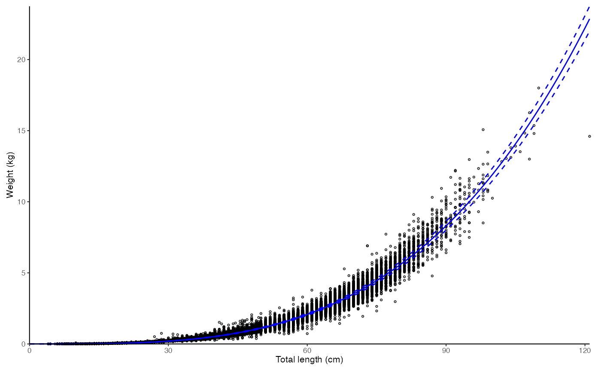
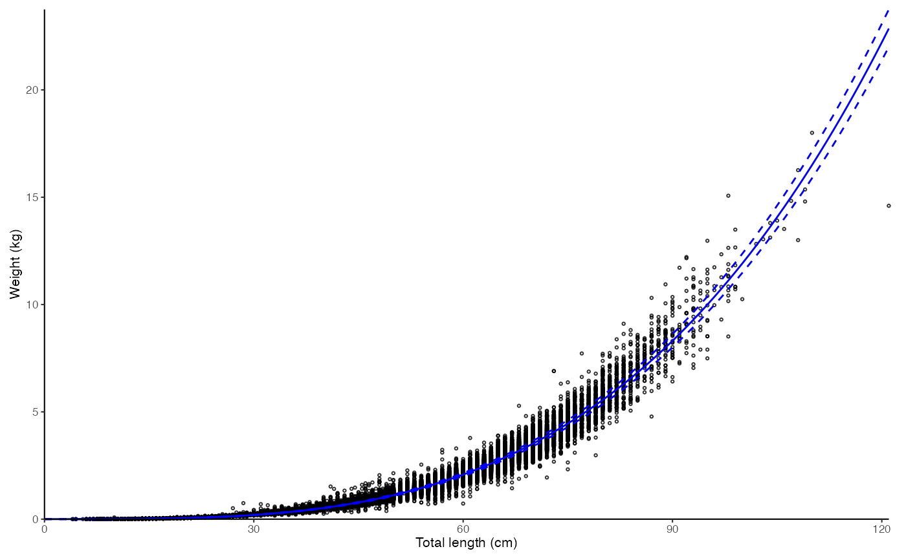

Plots length-weight relationship for a species and calculates the a and b coefficients used in length-weight conversions.
Usage
plot_lw(
dt,
length = "length",
weight = "weight",
sex = "sex",
female.sex = "F",
male.sex = "M",
length.unit = "cm",
weight.unit = "kg",
split.by.sex = FALSE,
xlab = "Total length",
ylab = "Weight",
use.nls = FALSE,
init.a = NULL,
init.b = NULL,
log.axes = FALSE,
outlier.percentile = NULL,
annotate.coefficients = FALSE,
correct.units = FALSE,
base_size = 8,
legend.position = "bottom",
point.size = 0.5,
verbose = TRUE
)Arguments
- dt
A data.frame, tibble or data.table
- length
Character argument giving the name of the length column in
dt- weight
Character argument giving the name of the age column in
dt- sex
Character argument giving the name of the sex column in
dt. Ignored ifsplit.by.sex == FALSE.- female.sex, male.sex
A character or integer denoting female and male sex in the
sexcolumn ofdt, respectively.- length.unit
Character argument giving the unit of
length. Will be used in the labels of the figure and for conversion of the a coefficient. Allowed values for the conversion: "mm" (millimeters), "cm" (centimeters), and "m" (meters).- weight.unit
Character argument giving the unit of
weight. Will be used in the labels of the figure and for conversion of the a coefficient. Allowed values: "g" (grams), "kg" (kilograms), and "t" (metric tons).- split.by.sex
Logical indicating whether the result should be split by sex.
- xlab
Character giving the x-axis label without unit
- ylab
Character giving the x-axis label without unit.
- use.nls
Logical indicating whether the parameters should be estimated using the nonlinear least squares (
nls; TRUE) method over the log-log transformed linear model (lm; FALSE) method. See details.- init.a, init.b
Numeric values giving the starting value for a and b coefficients respectively for non-linear least-squares estimation (i.e. when
use.nls = TRUE). IfNULL(default) starting values are guessed.- log.axes
Logical indicating whether logarithmic axes should be used instead of Cartesian ones.
- outlier.percentile
Numeric argument giving the probability as a percent value which should be used to calculate residual quantiles for outlier removal. See details. Values > 99 are recommended. If
NULL(default), no outlier removal is conducted.- annotate.coefficients
Logical indicating whether the a and b coefficients should be annotated into the plot.
- correct.units
Logical indicating whether the a and b coefficients should be converted for centimeters and grams as in FishBase.
- base_size
Base size parameter for ggplot. See ggtheme.
- legend.position
Position of the ggplot legend as a character. See ggtheme.
- point.size
Numeric defining the size for data points in the plot. See the
sizeargument in geom_point.- verbose
Logical indicating whether to return warnings and messages.
Value
A list with three elements: a ggplot object containing the plot, text giving the central statistics that can be pasted to Markdown, and the model parameters (params).
Details
The function estimates the a and b coefficients of the length weight relationship, \(weight = a \times length^b\), and plots the data. The model can be fitted either using the standard log(weight) ~ log(length) regression (lm; default) or nonlinear least squares (nls) method. The nls method often manages to fit steeper slopes making the b parameter higher and the a parameter lower than the linear lm method. This tends to lead to visually more pleasing fits at high lengths and weights.
The a and b coefficients are dependent on the units of length and weight. In models, the length and weight units should often match those of the data going into the model, while in comparisons with FishBase, the units of length and weight should be centimeters and grams, respectively. If the units are wrong, the intercept, a, will be off the FishBase scale by orders of magnitude (see FishBase). The correct.units can be used to correct the data units to the FishBase standard (cm and g). The function also returns a warning when the returned parameters are not within expected bounds for cm and g estimation. It is recommended to compare the a and b coefficients with those in FishBase for the species as a quality assurance.
The outlier.percentile argument enables quick removal of troublesome outliers from the model estimation. The argument is defined as percentile probabilities and used to calculate quantile for absolute residual values from logarithmic regression to identify outliers (\(outlier = |r| > Pr[|r| > outlier.percentile/100]\)). These outliers are then removed from model dataset but plotted using crosses in the ggplot output. See Examples.
Examples
data(survey_ghl)
# Simple plot
plot_lw(survey_ghl, length = "length", weight = "weight")
#> $plot
 #>
#> $text
#> [1] "Logarithm transformed linear length-weight model. Not splitted by sex: \n a = 3.8236e-06 +/- 3.7869e-06 - 3.8606e-06 (95% CIs). \n b = 3.221 +/- 3.22 - 3.22 (95% CIs). \n Length in cm and weight in kg \n Number of included specimens = 67457 \n Total number of measured = 618779 \n Excluded (data missing): \n Length = 0; weight = 551322; outlier = 0"
#>
#> $params
#> # A tibble: 2 × 14
#> term estimate std.error statistic p.value conf.low conf.high r.squared
#> <chr> <dbl> <dbl> <dbl> <dbl> <dbl> <dbl> <dbl>
#> 1 a 0.00000382 0.00491 -2540. 0 0.00000379 0.00000386 0.989
#> 2 b 3.22 0.00128 2519. 0 3.22 3.22 0.989
#> # ℹ 6 more variables: AIC <dbl>, nobs <int>, length <chr>, length.unit <chr>,
#> # weight <chr>, weight.unit <chr>
#>
# \donttest{
# nls
plot_lw(survey_ghl, use.nls = TRUE)
#> $plot

#>
#> $text
#> [1] "Nonlinear least squares length-weight model. Not splitted by sex: \n a = 1.7268e-06 +/- 1.6962e-06 - 1.758e-06 (95% CIs). \n b = 3.419 +/- 3.42 - 3.42 (95% CIs). \n Length in cm and weight in kg \n Number of included specimens = 67457 \n Total number of measured = 618779 \n Excluded (data missing): \n Length = 0; weight = 551322; outlier = 0"
#>
#> $params
#> # A tibble: 2 × 13
#> term estimate std.error statistic p.value conf.low conf.high AIC nobs
#> <chr> <dbl> <dbl> <dbl> <dbl> <dbl> <dbl> <dbl> <int>
#> 1 a 0.00000173 1.56e-8 110. 0 1.70e-6 1.76e-6 -27925. 67457
#> 2 b 3.42 2.15e-3 1590. 0 3.42e+0 3.42e+0 -27925. 67457
#> # ℹ 4 more variables: length <chr>, length.unit <chr>, weight <chr>,
#> # weight.unit <chr>
#>
# Split by sex, annotate coefficients
plot_lw(survey_ghl, split.by.sex = TRUE, annotate.coefficients = TRUE)$plot
# Outlier removal
plot_lw(survey_ghl, outlier.percentile = 99)
#> $plot
#>
#> $text
#> [1] "Logarithm transformed linear length-weight model. Not splitted by sex: \n a = 3.74e-06 +/- 3.7064e-06 - 3.7738e-06 (95% CIs). \n b = 3.227 +/- 3.22 - 3.23 (95% CIs). \n Length in cm and weight in kg \n Number of included specimens = 67457 \n Total number of measured = 618779 \n Excluded (data missing): \n Length = 0; weight = 551322; outlier = 675"
#>
#> $params
#> # A tibble: 2 × 14
#> term estimate std.error statistic p.value conf.low conf.high r.squared
#> <chr> <dbl> <dbl> <dbl> <dbl> <dbl> <dbl> <dbl>
#> 1 a 0.00000374 0.00460 -2717. 0 0.00000371 0.00000377 0.991
#> 2 b 3.23 0.00120 2697. 0 3.22 3.23 0.991
#> # ℹ 6 more variables: AIC <dbl>, nobs <int>, length <chr>, length.unit <chr>,
#> # weight <chr>, weight.unit <chr>
#>
# }
#>
#> $text
#> [1] "Logarithm transformed linear length-weight model. Not splitted by sex: \n a = 3.8236e-06 +/- 3.7869e-06 - 3.8606e-06 (95% CIs). \n b = 3.221 +/- 3.22 - 3.22 (95% CIs). \n Length in cm and weight in kg \n Number of included specimens = 67457 \n Total number of measured = 618779 \n Excluded (data missing): \n Length = 0; weight = 551322; outlier = 0"
#>
#> $params
#> # A tibble: 2 × 14
#> term estimate std.error statistic p.value conf.low conf.high r.squared
#> <chr> <dbl> <dbl> <dbl> <dbl> <dbl> <dbl> <dbl>
#> 1 a 0.00000382 0.00491 -2540. 0 0.00000379 0.00000386 0.989
#> 2 b 3.22 0.00128 2519. 0 3.22 3.22 0.989
#> # ℹ 6 more variables: AIC <dbl>, nobs <int>, length <chr>, length.unit <chr>,
#> # weight <chr>, weight.unit <chr>
#>
# \donttest{
# nls
plot_lw(survey_ghl, use.nls = TRUE)
#> $plot

#>
#> $text
#> [1] "Nonlinear least squares length-weight model. Not splitted by sex: \n a = 1.7268e-06 +/- 1.6962e-06 - 1.758e-06 (95% CIs). \n b = 3.419 +/- 3.42 - 3.42 (95% CIs). \n Length in cm and weight in kg \n Number of included specimens = 67457 \n Total number of measured = 618779 \n Excluded (data missing): \n Length = 0; weight = 551322; outlier = 0"
#>
#> $params
#> # A tibble: 2 × 13
#> term estimate std.error statistic p.value conf.low conf.high AIC nobs
#> <chr> <dbl> <dbl> <dbl> <dbl> <dbl> <dbl> <dbl> <int>
#> 1 a 0.00000173 1.56e-8 110. 0 1.70e-6 1.76e-6 -27925. 67457
#> 2 b 3.42 2.15e-3 1590. 0 3.42e+0 3.42e+0 -27925. 67457
#> # ℹ 4 more variables: length <chr>, length.unit <chr>, weight <chr>,
#> # weight.unit <chr>
#>
# Split by sex, annotate coefficients
plot_lw(survey_ghl, split.by.sex = TRUE, annotate.coefficients = TRUE)$plot
# Outlier removal
plot_lw(survey_ghl, outlier.percentile = 99)
#> $plot
#>
#> $text
#> [1] "Logarithm transformed linear length-weight model. Not splitted by sex: \n a = 3.74e-06 +/- 3.7064e-06 - 3.7738e-06 (95% CIs). \n b = 3.227 +/- 3.22 - 3.23 (95% CIs). \n Length in cm and weight in kg \n Number of included specimens = 67457 \n Total number of measured = 618779 \n Excluded (data missing): \n Length = 0; weight = 551322; outlier = 675"
#>
#> $params
#> # A tibble: 2 × 14
#> term estimate std.error statistic p.value conf.low conf.high r.squared
#> <chr> <dbl> <dbl> <dbl> <dbl> <dbl> <dbl> <dbl>
#> 1 a 0.00000374 0.00460 -2717. 0 0.00000371 0.00000377 0.991
#> 2 b 3.23 0.00120 2697. 0 3.22 3.23 0.991
#> # ℹ 6 more variables: AIC <dbl>, nobs <int>, length <chr>, length.unit <chr>,
#> # weight <chr>, weight.unit <chr>
#>
# }